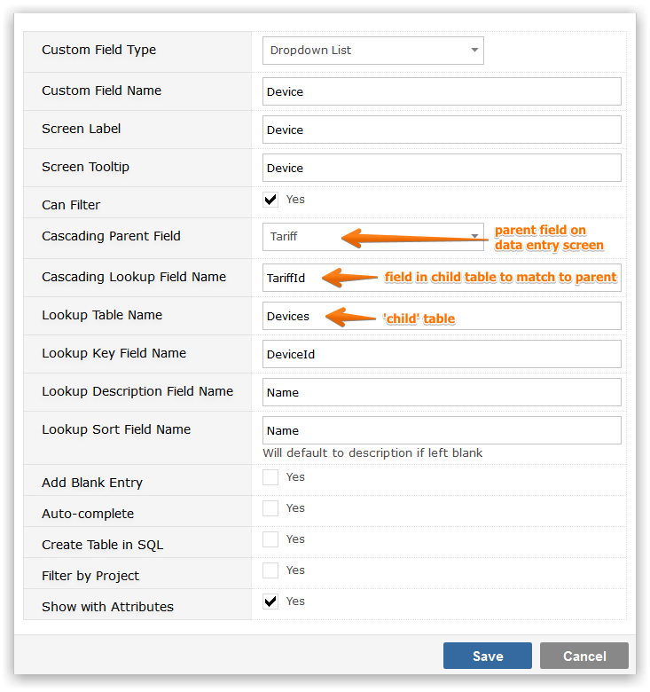

Where the value of one field depends on the value of another you can use a Cascading Custom field. You should always start by defining the highest level parent table, for example if you wish to cascade Country to State to Zip Code you should start by defining the Country table. When you create the child level definitions, you will be prompted to select the parent table. It follows that the highest level from which field cascade cannot be a 'cascading' dynamic lookup
You will be prompted for the following information
Worked Example:
In the above example, Tariff is Custom Field of type Dropdown List and is defined as NOT cascading. Tariff is the Parent Field for Device.
Device is a Custom Field of type Dropdown List and is defined as CASCADING from Tariff and the Cascading Lookup field is therefore TarrifId.

Data Entry of Tariff values will look as below:
Date Entry of Device values will look as below, with Gemini requesting the Tariff qualifier with a dropdown of Tariff descriptions.
NoteWhen placing the fields on the data entry screen, be sure to prompt for the parent before the child.
To get the following result
NoteThe Custom Field screen (and Gemini's logic) relates only to simple Field Id/Description matching - simple tables like 'Tariffs' and 'Devices'. More complex tables must be created using a SQL tool such as SQL Management Studio.